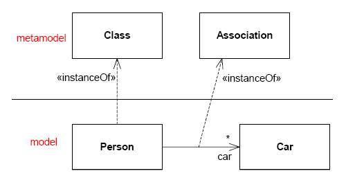

L'Unified Modeling Language (UML) è un linguaggio la cui sintassi e semantica non viene descritta usando le convenzionali notazioni (BNF, EBNF, etc.) usate per i linguaggi testuali. Il meccanismo usato per descrivere UML prende il nome di metamodellazione (metamodeling) in quanto UML è definito da un modello.
|
Figure 1. Esempio di modello e metamodello
 |
La specifica di UML nella versione 2.2.1 è organizzata in due volumi: UML 2.1.1: Infrastructure e UML 2.1.1: Superstructure; il primo volume definisce i costrutti fondamentali del linguaggio, mentre il secondo definisce i costrutti a livello utente.